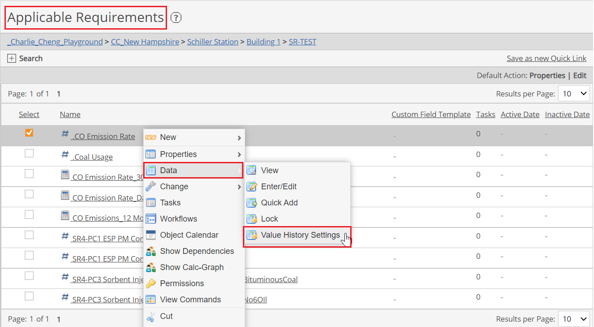
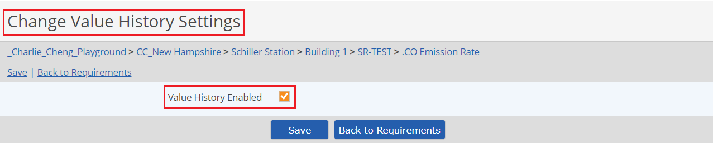

Parameters are numeric requirements set up to record data. The data can be entered directly or imported into the database. The parameter or variable may be a pollutant (e.g., total suspended solids, ammonia); an operational measurement (e.g., flow, temperature); or any other numeric requirement for which data must be directly entered (as opposed to calculated by the system).
To create a Parameter requirement:
Right click the parent object and choose New > Requirement.
Enter a Name. You can add translated values for localization by clicking on the language symbol .
In the Requirement Source section you can further define the requirement driver by selecting the Specific Citation and specifying a Periodicity. The Periodicity is used to indicate how often a permit says the requirement needs to be monitored.
Configure the other optional fields:
Active Date/Inactive Date: The begin and end dates that a requirement applies (optional)
Description: General description of requirement
Quality Template: Optional custom fields used to store additional information for a data point. See Data Quality Templates.
Calculation Parameters: Parameters available to be used in a data quality substitution script. These are the numeric and Boolean fields stored on the Data Quality Template selected above, if any.
Quality Substitution Script: Can be used to substitute a calculated value when the input data value meets certain criteria. The calculation parameters on the Data Quality Template may be used in its formula. See Data Quality Templates.
Use Auto UOM Conversion: Select this checkbox to allow users to enter data in any of the UOMs defined for the specified UOM Category (UOMs and UOM categories are defined in the UOM Libraries, see below). Select the UOM to be considered the base UOM. Data entered will be converted into the base UOM.
If Use Auto UOM Conversion is not selected, select the UOM to be used for entering data. No conversion will take place. These UOM fields cannot be changed once data is applied.
Data Determination Method: Method of measurement or reading
Parameter Field Definitions: How often data is collected. (This may be different than the Periodicity, which specifies how often the permit requires you to monitor the data.)
Precision: Number of places to the right of the decimal point to display.
Valid Range: Minimum and maximum field values. Values are inclusive. Data not within the valid value range will not be accepted for input. If either min or max is omitted, no limit is assumed for that end of the range.
Acronym Data Substitution: Text values (alpha-numeric) that may be entered and stored as numeric values.
Expected Frequency: Can be used to produce a data warning if expected data is missing (often used in conjunction with a backend integration system, to warn of possible failures). The expected frequency is defined as the number of data point expected per day. A Begin Date must be set.
Limits: Regulatory and internal limits may be set in order to produce data warning when limits are exceeded. See Setting Regulatory Limits.
Click Save to save the requirement.
Parameter Data Value History
The data value history option for parameters allows managers to view the history trail of parameter data. When this option is enabled it will be possible to see:
Current value and the user who entered the data point and timestamp
Previous values (up to pre-set time limit) along with the user who entered values and timestamp
These values can be extracted with EQL.
The Parameter Data Value History option must be enabled for the customer System by DevOps. Once enabled, the data value history option will be available for all parameters. An Administrator may enable or disable the option for individual parameters.
To enable or disable the Data Value History for a parameter:
Right click the parameter and select Data > Change Data Value History from the context menu. The Change Value History Settings window opens.

Check or uncheck the Value History Enabled option at the top of the page, then Save.

These values can be extracted with EQL by querying the DataPointHistory table (description follows).
DataPointHistory
Columns
ID DataPointHistory ID
ParentRequirementID Parent Requirement ID
Value Datapoint Value
RawValue Datapoint raw value
Collected Datapoint date of collection (Complete field)
Collector Collector
Created Date created
User.id User who added data points. Composite column to User table (includes all fields from User)
Permissions: Requires Report permission on the target object.
Units of Measure Libraries
The Setup menu contains two libraries to manage units of measure. These provide for consistent entry and allow conversion from one unit to a unit defined as the base unit. For example, if kilograms is deemed the base unit, other weights could be defined with the factor that when multiplied converts it to kilograms.
All units of measure are created within a category. For example, you could have a Weight category, then in the Units of Measure library you would create individual entries for Pound, Kilogram, Ounce, Gram, etc., each linked to the Weight category.
To create a new category:
In the Setup menu, click Units of Measure Category.
Click New Category.
Enter the UOM Name and enter an Alternate Name, such as an abbreviation or longer descriptive name.
To create a new unit of measure:
In the Setup menu, click Units of Measure.
Click New UOM.
Select the Category the unit belongs to, and enter the UOM Name and Alternate Name.
Expand the UOM Factor section and enter the factor to be applied to convert the unit to the base unit. Factors cannot be changed once data has been entered, but an end date can be applied to the factor and a new factor defined for a different date range.
There should be one unit in each category defined as the base unit, i.e. the factor should be "1".
If you have a large library, use the Search at the top to filter all units, e.g. to see what units are defined for a particular category.